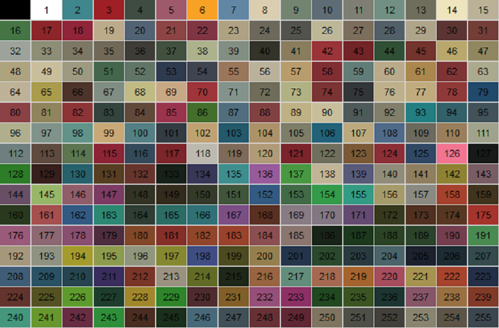

Puedes cambiar los colores de un vehiculo con estos opcodes:
0229: set_car $car00 primary_color_to 2 secondary_color_to 7
0A11: set_car $car01 tertiary_color_to 6 quaternary_color_to 14

Si usar NewOpcodes.cleo, podras cambiar los colores con:
0D63: set_car $car02 color 1 RGB 230 54 225
Parametros:
| ID | STDC | |
|---|---|---|
| Colores por Defectos | 0 | DEFAULT_COLORS |
| Primero | 1 | PRIMARY_COLOR |
| Segundo | 2 | SECONDARY_COLOR |
| Tercero | 3 | TERTIARY_COLOR |
| Cuarto | 4 | QUATERNARY_COLOR |
| Todos | 5 | ALL_COLORS |
| Color | Valores |
|---|---|
| Negro | 0 0 0 |
| Rojo | 255 0 0 |
| Verde | 0 255 |
| Azul | 0 0 255 |
| Blanco | 255 255 255 |